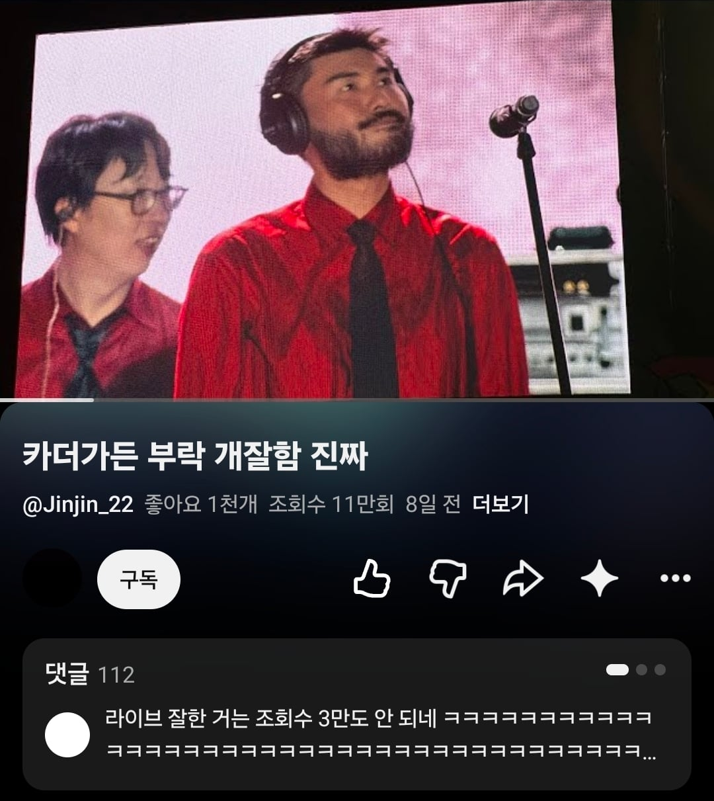

만회함

만회함
ㅋㅋㅋ 이번엔 안망했나보네
킨더조이랑 히츠지분가쿠랑 겹쳐서 못봤는데 아쉽네
원래도 잘했음 ㅋㅋ 별로였으면 저렇게 팬층이 없었을거여
나는 잘 모르지만 노래 좋아하는 친구가 컨디션을 많이 타는 발성이라고 했던거같음
난 못할 때 못하더라도
못하는 거 AR로 감추지 않고 드러내면서 공연하는 게 100배 낫다고 생각해서
오히려 기복 좀 보이는 게 호감임
음알못인데 영상 댓글보니 풀세션이라고 또 좋아하더라 그러면은 아무래도 세션분들 인건비빠지니까 본인한테 들어오는게 더 적어지려나?
ㅇㅇ 덩치 되는 아티스트들은
하나하나가 10~20명씩 책임지고 다니는 중소기업이라고 봐야 됨
다 자기 몫 쪼개서 퀄리티 올리고 그러는 거
아하 ㄳㄳ
유영우랑 직업을 좀 바꿔봐!
킨더조이는 음색이 특이해서 다른 가수가 불러도 그 맛이 안 날듯
그말이 아니라 가수그만하고 개그맨 하라는소리임
유튜브 조회수 산정방식 최근에 바뀌어서 그런거아님...?
노래 실력이 제라드 웨이급으로 처참하다더라
그 정도로 처참하진 않음
살찐노홍철처럼생겻네
이즈리얼 화이팅
치이카와 수염 좀 짤라라
카더가든 진명 불리는 순간: 라이브 개망할때
잔망루피 색이 진해졌네..
어째 얼굴에 검은부분이 점점 많아지니
담배 끊었나?
아 이분이 레이너 특공대 대장이셨어?